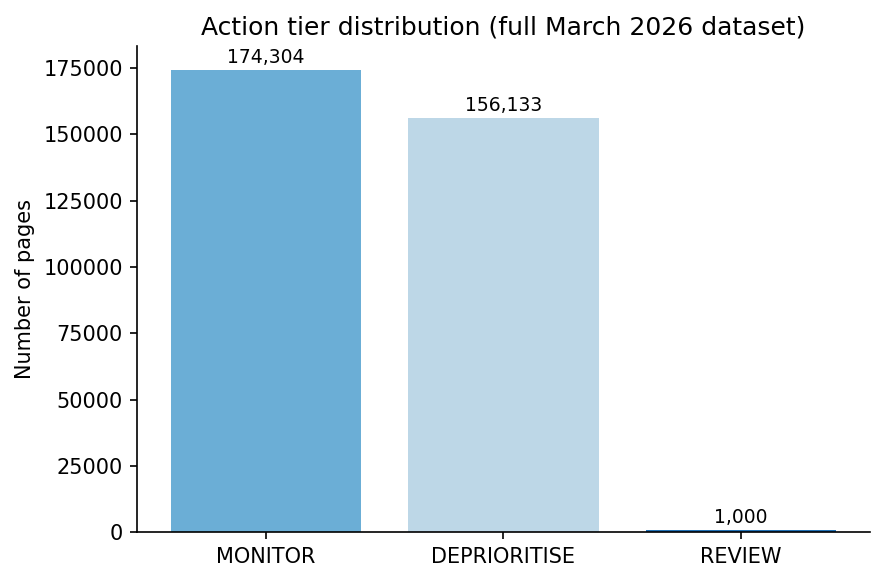
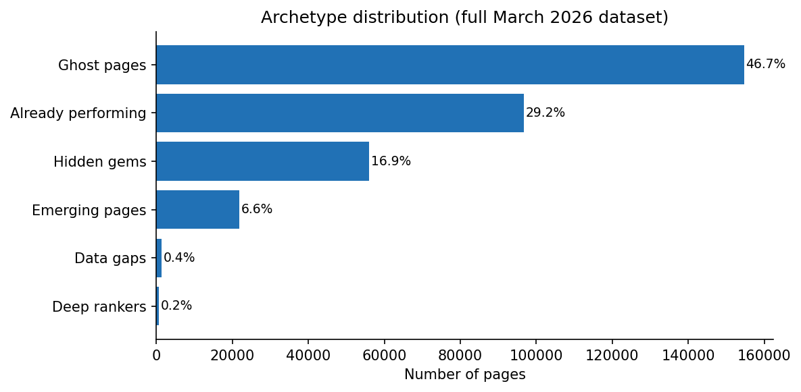
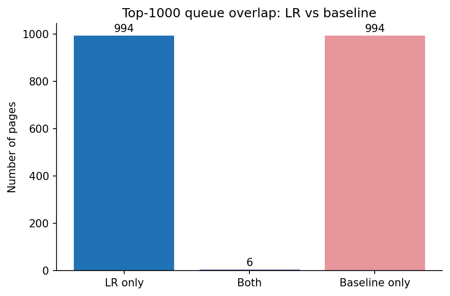
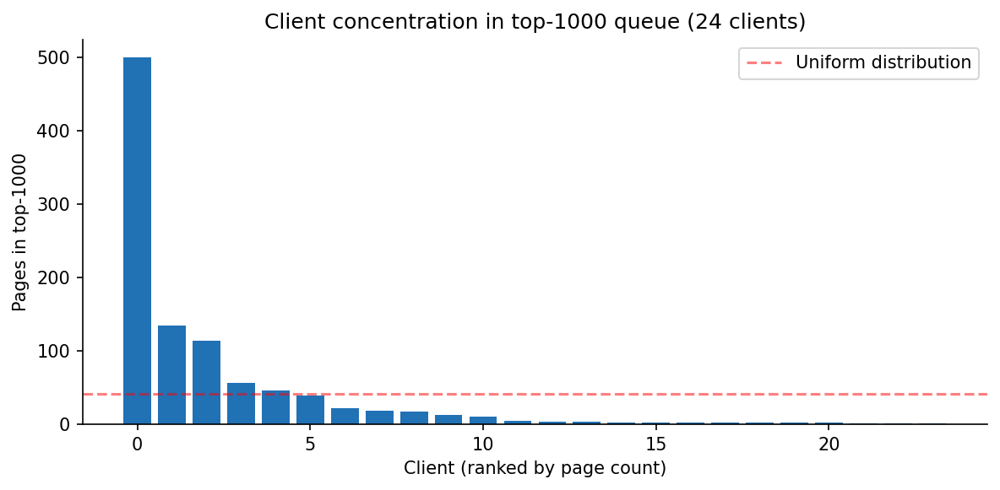
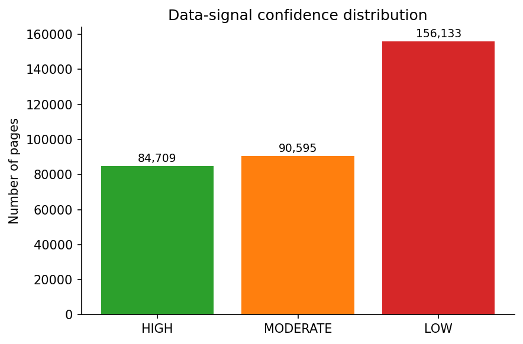

Which pages should a human SEO reviewer inspect first? A ranked review queue built from observed search-visibility patterns across a 331,437-page portfolio.
A portfolio of hundreds of thousands of pages cannot be reviewed at uniform depth. This is a triage problem: given limited review capacity, which pages deserve human inspection first?
Not an automation problem — editorial judgment remains essential. A ranked review queue scored by a model identifies where human review is most likely to be productive.
FlyRank ML internship. All client names, domains, URLs, and private queries removed.
331,437 page-level records from the March 2026 partition of FlyRank's pseudonymized warehouse, aggregated from ~9.8M daily fact rows. Each record = one content page within one pseudonymized client.
| Feature | Description | Rationale |
|---|---|---|
march_gsc_impressions | Total GSC impressions across March 2026 | Primary signal of search demand |
march_gsc_avg_position | Mean ranking position (days with pos ≤ 0 excluded) | Deeper positions have different opportunity profiles; independent of label |
Both features observable at decision time. No label-derived, future, or product-decision features used.
Client identifiers, URLs, queries: removed during pseudonymization. Product-decision flags (health_score, priority_score): excluded so the model learns from signals, not product decisions. Zero-impression rows: no search presence. GA4-only features: ~4% coverage, excluded to avoid noise.
client_hash_id (55 clients). Each fold holds out ~11 clients entirely. No client appears in both train and test. This tests generalization to unseen clients.
opportunity_proxy = (impressions > 0) & (clicks == 0). A page is proxy-positive when it has impressions but zero clicks. This is a proxy, not a future prediction target. Base rate: 32.6%.
Baseline: Rule-based scoring combining position and impression thresholds. Logistic Regression (primary): max_iter=1000, random_state=42, features standardized via StandardScaler (training fold only). Random Forest (secondary): 100 estimators, same GroupKFold structure.
| Check | Result |
|---|---|
| Future-window inputs | PASS — March 2026 only |
| Label-derived features | PASS — Clicks and CTR excluded |
| Product flags | PASS — No product-decision flags |
| Target-derived fields | PASS — Trend fields excluded |
| Train/test separation | PASS — GroupKFold, zero overlap |
| Preprocessing | PASS — Scaler fitted on train only |
All methods evaluated on the same GroupKFold splits with the same Precision@K metric.
| Method | P@100 | P@500 | P@1000 | P@5000 |
|---|---|---|---|---|
| Baseline (rule-based) | 0.746 ± 0.105 | 0.821 ± 0.124 | 0.828 ± 0.119 | 0.702 ± 0.156 |
| Logistic Regression PRIMARY | 0.992 ± 0.016 | 0.982 ± 0.025 | 0.971 ± 0.030 | 0.910 ± 0.053 |
| Random Forest SECONDARY | 0.964 ± 0.024 | 0.951 ± 0.014 | 0.953 ± 0.011 | 0.948 ± 0.016 |
Base rate: 32.6%. All metrics out-of-client-fold (5-fold GroupKFold, grouped by client_hash_id).
LR P@100 = 0.992: ~99 of its top 100 ranked pages are proxy-positive. At P@1000, 0.971 vs 0.828 baseline = ≈1.17× lift. The RF achieves 0.953 ± 0.011 at P@1000 with lower variance, but LR was independently audited (Week 6) and used for the Week 7 action queue — making it the primary decision-support model.
LR and baseline top-1000 queues share only 6 pages (0.6%). The two methods identify fundamentally different pages as highest priority.
LR coefficients (scaled): march_gsc_impressions = −4.912 (negative due to fillna(0); within impressions>0 subset, higher impressions raise probability); march_gsc_avg_position = +2.815 (deeper positions increase predicted probability).

REVIEW (1,000), MONITOR (174,304), DEPRIORITISE (156,133).

Ghost (46.7%), Already performing (29.2%), Hidden gems (16.9%), Emerging (6.6%).

Only 6 shared pages (0.6%). 994 unique to each method.

One client contributes 50% of the top-1000 queue.

HIGH (84,709), MODERATE (90,595), LOW (156,133).
Limitations are presented prominently because honest framing makes the result trustworthy.
opportunity_proxy) is constructed from the same March 2026 window as features. impressions > 0 appears in both the feature set and the label definition, creating a structural relationship. Precision@K is partly influenced by this overlap. This is not a clean future prediction target.LR score → ranked queue → reason codes + archetype → human review action
The model's output is a ranked decision queue for human review, not a causal prediction of search-engine behavior.
| Archetype | What It Means | Review Direction |
|---|---|---|
| Hidden gems (56,049) | Impressions > 0, clicks = 0, position > 10 | Content alignment, title/meta improvements |
| Deep rankers (606) | Position > 50, impressions > 0 | Competitive query targeting, structural SEO |
| Emerging (21,867) | Low impressions, position 11–50 | Monitor for growth; verify topic targeting |
| Already performing (96,782) | Position ≤ 10, clicks > 0 | Low priority; monitor for drift |
| Ghost pages (154,699) | Impressions = 0 | Check indexing, crawlability, technical issues |
| Data gaps (1,434) | Position missing, impressions > 0 | Investigate data availability |
| Week | Notebook | Purpose |
|---|---|---|
| W05 | w05_model.ipynb | Model training and comparison (LR, RF, baseline) |
| W06 | w06_validation_audit.ipynb | Independent validation and research-claim audit |
| W07 | w07_action_playbook.ipynb | Action playbook and LR-ranked queue generation |
| W08 | capstone.ipynb | Capstone paper and final documentation |
Repository: work/notebooks/capstone.ipynb. Data: FlyRank/internship-warehouse on Hugging Face (gated; accept data-use terms). Dependencies: Python 3.12+, pandas, numpy, scikit-learn, matplotlib, huggingface-hub, python-dotenv. Environment: Set HF_TOKEN in .env. Execution: Run top-to-bottom.
Special thanks to the FlyRank team for the guidance, technical mentorship, and learning environment that supported this work.
Built on the FlyRank ML Internship dataset.
The pseudonymized warehouse release (FlyRank/internship-warehouse on Hugging Face) was prepared by FlyRank for internship use. All client names, domains, URLs, raw search queries, and private identifiers were removed or pseudonymized before release.